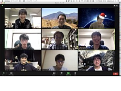

Update : 4 Jan. 2023
Update : 4 Jan. 2023中村研ニュース（2020年度）
更新中です．．．
【祝】Ｍ２の菊地と谷山がYNU CREATES論文賞受賞！［2021年3月］
博士課程前期２年の菊地修平と谷山天晴が，それぞれ，3月25日（木）付けで，YNU CREATES論文賞を理工学府から受けました。修士生２名と学部生２名が修了・卒業［2021年3月］
3月25日（木）に証書の授与式が行なわれ，中村研も修士生２名と学部生２名が無事に修了・卒業して学位が授与されました。 修了・卒業したメンバーは次の通りで，卒業した４年生は２人とも進学して中村研に残ります。- 修士修了
- 菊地 修平，谷山 天晴
- 学部卒業
- 小林 和哉，吉本 圭佑
D2藤野とM2の谷山および菊地が日本物理学会で登壇［2021年3月］
3月12日（金）から15日（月）まで，日本物理学会第76回年次大会がオンラインで開催され，初日の12日に博士課程後期２年の藤野と博士課程前期２年の菊地が，また14日に博士課程前期２年の谷山がそれぞれZoomで登壇しました。藤野の講演のタイトルは「POLARBEAR実験によるCMB円偏光探索に向けた半波長板の評価2」，菊地の講演のタイトルは「POLARBEAR-2aにおける常温温度モニターの現状」，谷山の講演のタイトルは「液体キセノンの赤外発光の測定-7」で，それぞれ有益な質疑応答が行われました。
学部４年生の３人が卒論発表会で発表［2021年2月］
2月18日（木）に理工学部物理工学EPの卒論発表会が開かれ，中村研の学部４年生の３人が発表を行ないました。発表のタイトルは次の通りです。
◎小林 和哉：「液体キセノンの散乱長測定実験の散乱光分布のシミュレーション」◎山口 貴大：「微弱光測定におけるCCDイメージの宇宙線ノイズ除去手法の研究」
◎吉本 圭佑：「微弱なシンチレーションの発光スペクトルの測定手法の研究」
M2の院生２名が修論発表会で発表［2021年2月］
2月9日（火），10日（水），12日（金）に理工学府数物・電子情報系理工学専攻物理工学教育分野の修論発表会が開かれ，9日（火）と10日（水）に中村研の博士課程前期２年の院生が発表を行ないました。発表のタイトルは次の通りです。
◎菊地 修平：「CMB偏光観測実験POLARBEAR-2の観測ノイズ評価のための温度モニターに関する研究」◎谷山 天晴：「暗黒物質探索実験のためのキセノンシンチレータの微弱な発光成分の研究」
中村が東大宇宙線研共同利用研究成果発表会で講演［2021年2月］
2月8日（月），9日（火）に，東京大学宇宙線研究所の共同利用研究成果発表研究会がオンラインで開催され，中村も発表を依頼されて8日（月）の午後に講演を行ないました。講演のタイトルは「液体キセノンの近赤外発光の研究」で，表題の研究の進捗状況について報告しました。次期４年生の仮配属［2021年1月］
1月29日（金）に，中村研の令和３年度の新卒研生として５人が仮配属されました。OBの越智紘輝氏がオンラインで来訪［2021年1月］
1月18日（月）に，中村研OBの越智紘輝氏（現・三菱スペース・ソフトウェア）がオンラインで来訪されました。新年おめでとうございます［2021年1月］
コロナ禍の中，昨年も多くの皆様にいろいろとご支援頂き，どうも有難うございました。今年も，2020年に引き続き，宇宙素粒子実験に邁進します。宇宙暗黒物質探索で用いられる液体キセノンに関しては，液体キセノンの特性を明らかにするユニークな研究を推進し，液体キセノンを用いる将来計画に大きく貢献するつもりです。
また，学生の一部は現在も宇宙マイクロ波背景放射観測実験（POLARBEAR，LiteBIRD計画）におおいに貢献しつつあります。
これらのような中村研究室の研究活動を今後ともご支援下さい。
今年もどうぞよろしくお願い申し上げます。
オンラインで中村研の忘年会［2020年12月］
 コロナ禍のため対面で忘年会は出来ませんでしたが，12月25日（金）にZoomで中村研の忘年会を行ないました。【連絡】中村研に関心をお持ちの３年生へ［2020年12月］
本Web内の研究テーマの情報は古いものがありますが，現在も非常に忙しいため更新には時間が掛かりそうです。そこで，研究内容に関する最新の情報は，研究室に直接来てお確かめ下さい。また，前項に掲載している，研究室の紹介パンフレット第２版もご参照下さい。 なお，以前から，卒研配属を考えている学部３年生へ向けたメッセージを載せています。>> メッセージのページ
【再掲】研究室の紹介パンフレット第２版［2020年12月］

 中村研究室の紹介パンフレット「宇宙素粒子物理学へのいざない」（京都工芸繊維大学大学院の宇都宮里梨子氏の全面的なご協力とデザインによる）が，若干手直しされて第２版になりました。なお，同じもののデジタル版もここに公開しています。対応するQRコードもご利用下さい。
中村研究室の紹介パンフレット「宇宙素粒子物理学へのいざない」（京都工芸繊維大学大学院の宇都宮里梨子氏の全面的なご協力とデザインによる）が，若干手直しされて第２版になりました。なお，同じもののデジタル版もここに公開しています。対応するQRコードもご利用下さい。
M1の前田と吉田が修士中間発表会で発表［2020年12月］
12月10日（木）と17日（木）に理工学府数物・電子情報系理工学専攻物理工学教育分野の修士中間発表会が開かれ，17日（木）中村研の博士課程前期１年の前田と吉田がZoomで発表を行ないました。発表のタイトルは次の通りです。
◎前田 尚哉：「深層学習を⽤いた宇宙論パラメータの決定」◎吉田 裕哉：「2Wキセノンフラッシュランプモジュールの発光特性に関する研究」
中村が学部３年生向けに卒研紹介［2020年12月］
12月3日（木）に，物理工学EPの３年生向けの卒研ガイダンスがあり，中村も研究室紹介を行ないました。わずか７分だったので大まかな話でしたが，興味を持っていただければ幸いです。詳しいことは，研究室に来て直接聞いて頂ければ幸いです。中村とD2の藤野，M2の谷山が日本物理学会2020年秋季大会で登壇［2020年9月］
9月14日（月）から17日（木）まで，日本物理学会2020年秋季大会がオンラインで開催され，博士課程後期２年の藤野が14日に，中村と博士課程前期２年の谷山が15日に登壇しました。講演のタイトルは，藤野が「POLARBEAR実験によるCMB円偏光探索に向けた半波長板の評価」で，POLARBEAR実験のデータ解析について報告し，中村が「液体キセノン中の散乱長測定のための装置開発-5」，谷山が「液体キセノンの赤外発光の測定-6」で，中村研で共同研究で進めている液体キセノンに関する各研究について報告しました。
大学院理工学府博士課程（前期）の一般選抜で１名合格［2020年9月］
令和3年度横浜国立大学大学院理工学府の一般選抜において，博士課程（前期）で本研究室を志望する受験生が１名合格しました。【連絡】秋学期のプレゼンテーション演習の課題［2020年8月］
中村研でのプレゼンテーション演習の課題について事前に相談したい３年生はご連絡下さい。なお，別ページに過去の発表題目の一覧を掲載しました。Webを少しずつ更新します［2020年8月］
事情により長期間Webの更新が滞りましたが，8月から徐々に更新します。大学院理工学府博士課程（前期）の特別選抜で１名合格［2020年7月］
令和3年度横浜国立大学大学院理工学府博士課程（前期）の特別選抜において，本研究室を志望する受験生が１名合格しました。コロナ禍のため５月７日に春学期開講［2020年5月］
コロナ禍のため，2020年度の春学期は５月７日（木）に遠隔授業で開講しました。2020年度はYNUサイエンスカフェは中止［2020年4月］
コロナ禍の為，2020年度のYNUサイエンスカフェは，残念ながら全て中止となりました。２名が大学院に進学し，３名が卒研配属しました［2020年4月］
コロナ禍の中，2020年度がスタートし，新Ｍ１の２人と新４年生３人が研究室に配属されました。- 前田 尚哉（M1）
- 吉田 裕哉（M1）
- 小林 和哉（B4）
- 吉本 圭佑（B4）
- 山口 貴大（B4）